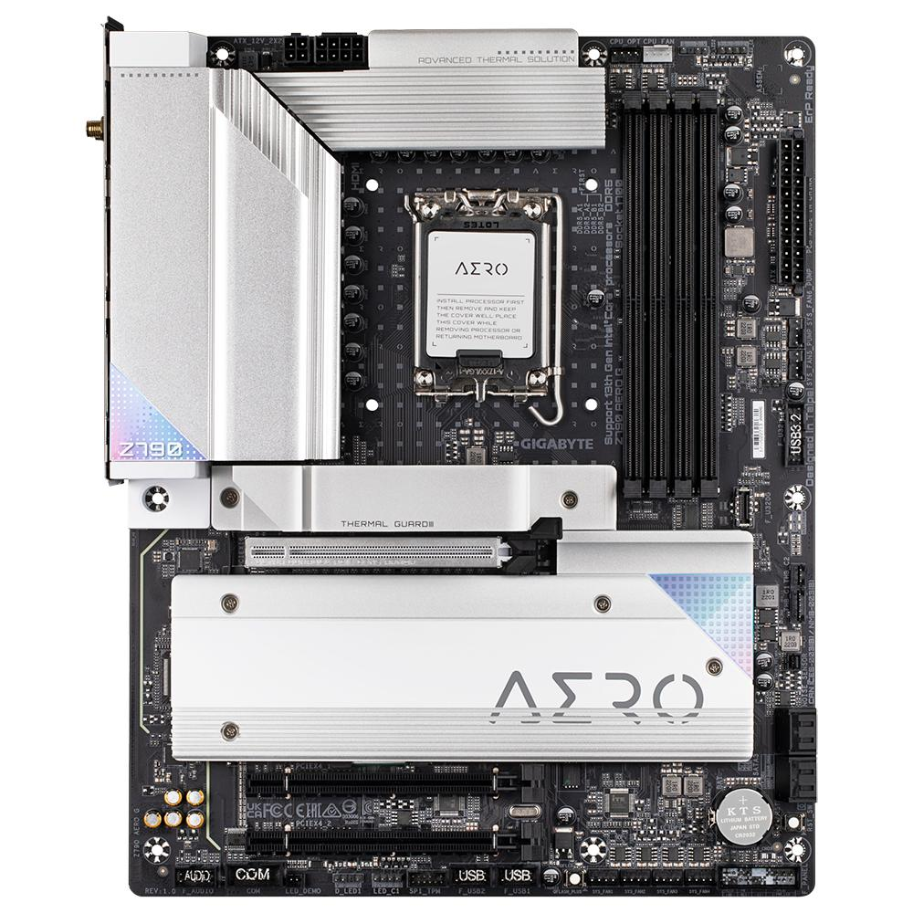
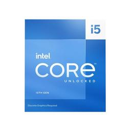
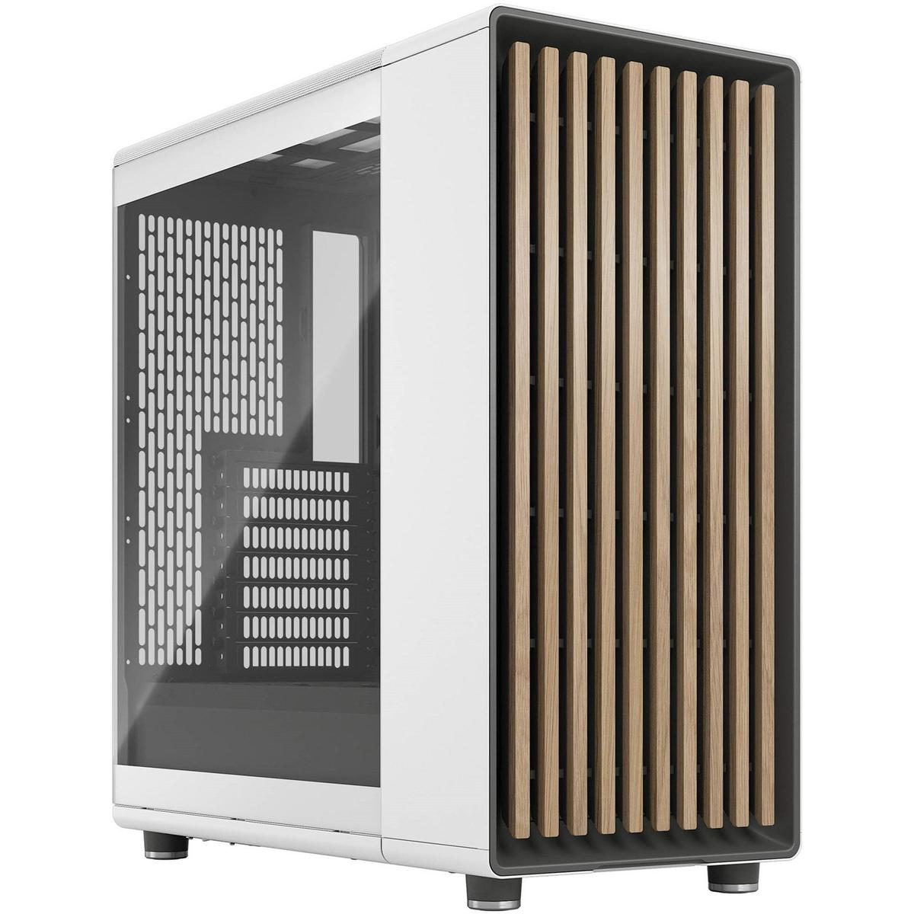

Guia para montar um PC
Reuna os componentes
De forma a facilitar a montagem do computador e antes de montar analizar a fio cada compunente que vai ser utilizado para não danificar os outros no progresso
Este artigo mostrará como montar um computador pessoal. Após unir todos os componentes, você terá o computador inteiramente para si, podendo idealizar um sistema mais voltado ao seu próprio uso.
Passo 1: instalar a Placa-mãe Gigabyte Z790 AERO G ATX LGA1700
Prepare a placa mãe. Se quiser montar um dispositivo mais popular, use uma placa mãe compatíveis com Intel i3, i5 ou i7.
Passo 2: Processador intel Core i5-13600kf 3,5 GHz de 14 núcleos
Instale a CPU no soquete da placa mãe Você deve escolher a CPU correta para a placa mãe escolhida, instalando-a de acordo com as instruções dadas. Cuidado para não instalar a CPU de modo incorreto. Não apenas o computador não funcionará, mas fazê-lo pode gerar um curto-circuito e danificar a placa mãe.
Passo 3: Cooler líquido para CPU Phanteks Glacier One 240 MPH 60,51 CFM
conecte o Cooler da CPU à Placa-mae

passo 4:Anexe os modulos da Memória Corsair Vengeance 32 GB (2 x 16 GB) DDR5-5200 CL40
A placa mãe deve ter colunas de slots com duas ou três seções que variam em comprimento. Assegure-se de que os pinos das placas RAM se alinhem aos do conector da placa mãe. Não misture os slots para memória RAM com os slots PCI. Os últimos são, em geral, mais largos.

Passo 5:Abra o Gabinete Torre Média North ATX Fractal Design e monte uma fonte de energia compatível com o tipo Fonte de alimentação Thermaltake Toughpower GF3 TT Premium 1000 W 80+ Gold certificada totalmente modular ATX
Conecte todos os pinos aos drives e à placa mãe.
Passo 6
Anexe a lâmina traseira da placa mãe ao gabinete e confira as posições de montagem. As instruções da placa mãe devem definir sua posição
Passo 7
Posicione adequadamente a placa mãe no gabinete.

Passo 8: gabinete à placa mãe
As instruções do gabinete e da placa mãe deverão indicar onde conectar os cabos.

Passo 9
Finalmente, selecione um sistema operacional compatível e siga as instruções de instalação